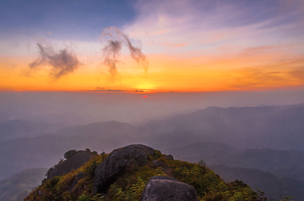
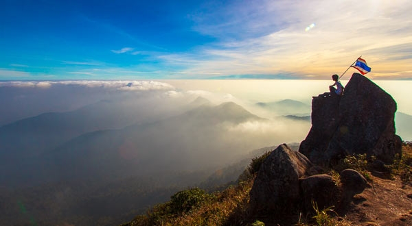
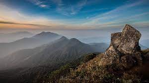
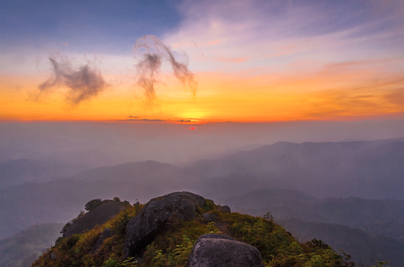
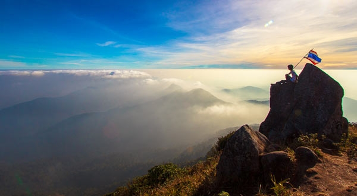
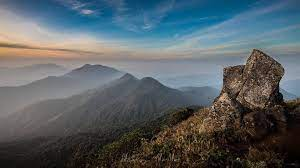

เป็นยอดเขาที่สูงที่สุดในอุทยานแห่งชาติแม่วงก์และสูงที่สุดในผืนป่าตะวันตกห่างจากที่ทำการอุทยานฯ 27 กิโลเมตร เป็นยอดเขาที่นักท่องเที่ยวนิยมการท่องเที่ยวแบบเดินป่า ปีนเขา ต้องการที่จะ ไปเยือนสักครั้ง ด้วยความสูง 1,964 เมตร
ที่อยู่: ปางตาไว ปางศิลาทอง กำแพงเพชร กำแพงเพชร 62000
เวลาทําการ: ช่วงเวลาเปิด : พฤศจิกายน - กุมภาพันธ์ ของทุกปี (ค่าเข้าสถานที่ อุทยาน คนละ 60 บาท)
เบอร์ติดต่อ: 02 562 0760 3
เปิดแผนที่ ย้อนกลับ